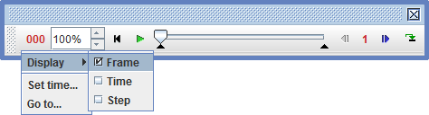
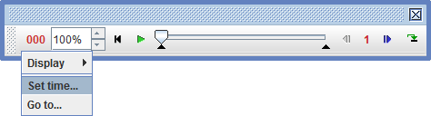

Tracker can analyze three different video types:
Tracker uses the Xuggle video engine to open most digital video files including .mov, .avi and .mp4 on all platforms.
To open a video into a new tab, use the Open button or File|Open File menu item. To import a video into an existing tab, use the Video|Import, Video|Replace or File|Import|Video menu item.


Select the desired video in the file chooser to open it.
Choose the File|Open URL menu item and enter a known URL in the dialog to open a video directly from the web.


Another option is the OSP Digital Library Browser (DL browser). Open the DL browser by clicking the Open Library Browser button or choosing the File|Open Library Browser menu item. The DL browser enables you to browse and access collections of digital library resources including videos and tracker files. For help using the DL browser, see Digital Library Browser.

Tracker will automatically open a sequence of up to 1000 JPG or PNG images that are numbered sequentially. To open a sequence, select only the first image in the sequence.
Image sequence numbering must have a fixed format. For example, selecting the first image in a sequence numbered image00.jpg to image14.jpg will open all 15 images, but if the sequence is numbered image0.jpg to image14.jpg then only the first 10 images will be opened (i.e., up to image9.jpg).
Image videos loaded from files are initially read-only--each image file is loaded only when displayed. For faster response and editing capabilities, you can load all images into memory by checking the "Load All Images" checkbox in the Video menu. Note: loading all images may require a great deal of memory; you can increase your available memory in the preferences dialog.
Images that have been copied to the clipboard may be pasted directly into Tracker for analysis. Choose the Video|Paste Image or Video|Paste Image|Replace Video menu item to create a new image video.
Once an image video has been created, you can paste or import additional images using the Video|Paste Image or Video|Import Images menu choices Before This Frame or After This Frame.
To remove images from an image video use the Video|Remove This Frame item.
When importing images you can select multiple images in the file chooser by control-clicking or shift-clicking.

When closing or saving an image video that contains pasted images, a warning dialog prompts you to save the images as files if desired. You must save the images if you wish to reopen them at a later time.

A video clip is a subset of frames in a video defined by:
The start frame is the frame number of the first step, the step size is the frame increment between successive steps, and the end frame is the frame number of the last step. For example, a clip with start frame 3, step size 2 and end frame 11 would consist of step numbers 0, 1, 2, 3 and 4 that map to video frame numbers 3, 5, 7, 9 and 11, respectively. (Note: the end frame must be an integer number of steps downstream from the start frame.)
A clip is defined for every video and even for null videos. For single-frame and null videos the clip settings apply to tracks but every step maps to the same video image.
Video clip properties are set with the video player and/or the clip inspector.
Note:
To display the clip inspector, click the Clip Settings button on the toolbar.

The clip inspector shows the current video clip settings and also provides fields for setting a start time (time assigned to step 0), the true frame rate (important for high-speed or time-lapse videos) and the time interval dt between frames (inverse of the frame rate).

The video player is normally attached to the video view, but you can drag the entire player by the left end to convert it to a floating window if desired.

The player includes (from left to right):
Click the readout and select the display type: frame number (measured from the beginning of the video), time in seconds (measured from the start time) or step number (measured from the start frame). The readout displays frame number by default.

Click the readout and set the time at the current frame by choosing the Set time... item from the dropdown menu. Note: this action changes the times at all frames in the video.

Choose the Go to... item from the readout or Video menu to display the Go To dialog. Enter a desired frame, time or step and click OK or hit the Enter key to jump directly there.
Use the rate spinner  to set the play rate (% of normal) or enter a desired rate directly in the field.
to set the play rate (% of normal) or enter a desired rate directly in the field.
Click the reset button  to reset the video to step 0, or use the keyboard shortcut HOME. To move immediately to the end of the video, use the keyboard shortcut END.
to reset the video to step 0, or use the keyboard shortcut HOME. To move immediately to the end of the video, use the keyboard shortcut END.
Click the play/pause button  to play the video; click again to pause.
to play the video; click again to pause.
Drag the slider to scan a video or move quickly to a desired frame.

Drag the black in- and out-point markers to set the start and end frames.

Right-click the slider to access many of these actions in a popup menu.

Click the step button  to step forward one step, or use the keyboard shortcut PageDown. Click the back button
to step forward one step, or use the keyboard shortcut PageDown. Click the back button  to step back one step, or use the keyboard shortcut PageUp. Hold down the shift key with these actions to step by 5 steps instead of 1.
to step back one step, or use the keyboard shortcut PageUp. Hold down the shift key with these actions to step by 5 steps instead of 1.
Click the step size control to set the step size in frames per step.

Click the loop button  to toggle looping (continuous play).
to toggle looping (continuous play).
There are four ways to change the magnification of the video for more accurate marking:
 and choose the desired zoom level from the dropdown menu as shown in below. Tip: Double-click the zoom button to set the zoom level To Fit so the video image fits exactly in the main video view.
and choose the desired zoom level from the dropdown menu as shown in below. Tip: Double-click the zoom button to set the zoom level To Fit so the video image fits exactly in the main video view.


Zoom button dropdown (left) and right-click popup (right) menus

Right-drag and zoom to the box
Video filters allow you to modify the video image. See video filters for complete filter descriptions.
Uncheck the Video|Visible menu item to hide the video image and display the tracks on a white background. Choose Video|Close to remove the video permanently.
Note: when removing or replacing a video, a new video clip is created. This may result in some tracks having existing steps that are no longer included in the clip or unmarked steps that are newly included. If this happens, correct the problem by resetting the start frame, step size and end frame for the new clip.
Tracker can export the current video clip as a digital video file, animated GIF or image sequence, thus serving as a simple video editor and transcoder. But exported videos can also include track overlays, video filters, and additional views like world views and plots, making them useful for documenting the video modeling or analysis results. Interlaced 30 fps videos can also be exported as 60 fps deinterlaced videos, which doubles the temporal resolution while halving the vertical resolution.
Note: the exported video contains only frames in the current video clip (determined by start frame, step size and end frame), not the entire video.

To export a video clip, select the File|Export|Video Clip... menu. This will bring up the Export Video Clip dialog.

Select the view, content, size and format of the exported video from the dropdown lists. The content choices depend on the selected view as follows: